Środowisko programistyczne¶
Tłumaczenie wspomagane przez AI - dowiedz się więcej i zasugeruj ulepszenia
Nowoczesne zintegrowane środowiska programistyczne (IDE) mogą dramatycznie zmienić Twoje doświadczenie z tworzeniem kodu w Nextflow. Ten quest poboczny koncentruje się konkretnie na wykorzystaniu VS Code i jego rozszerzenia Nextflow do szybszego pisania kodu, wczesnego wykrywania błędów i efektywnej nawigacji po złożonych workflow.
To nie jest tradycyjny samouczek
W przeciwieństwie do innych modułów szkoleniowych, ten przewodnik jest zorganizowany jako zbiór szybkich wskazówek, podpowiedzi i praktycznych przykładów, a nie samouczek krok po kroku. Każda sekcja może być eksplorowana niezależnie, w zależności od Twoich zainteresowań i bieżących potrzeb programistycznych. Śmiało przeskakuj między sekcjami i skup się na funkcjach, które będą najbardziej przydatne w Twoim procesie tworzenia workflow.
Co powinieneś wiedzieć wcześniej¶
Ten przewodnik zakłada, że ukończyłeś kurs szkoleniowy Hello Nextflow i czujesz się komfortowo z podstawowymi koncepcjami Nextflow, w tym:
- Podstawowa struktura workflow: Rozumienie procesów, workflow i sposobu ich łączenia
- Operacje na kanałach: Tworzenie kanałów, przekazywanie danych między procesami i używanie podstawowych operatorów
- Moduły i organizacja: Tworzenie modułów wielokrotnego użytku i używanie instrukcji include
- Podstawy konfiguracji: Używanie
nextflow.configdla parametrów, dyrektyw procesów i profili
Czego się tutaj nauczysz¶
Ten przewodnik koncentruje się na funkcjach produktywności IDE, które uczynią Cię bardziej efektywnym programistą Nextflow:
- Zaawansowane podświetlanie składni: Zrozumienie tego, co VS Code pokazuje o strukturze Twojego kodu
- Inteligentne automatyczne uzupełnianie: Wykorzystywanie kontekstowych sugestii do szybszego pisania kodu
- Wykrywanie błędów i diagnostyka: Wychwytywanie błędów składni przed uruchomieniem workflow
- Nawigacja po kodzie: Szybkie przechodzenie między procesami, modułami i definicjami
- Formatowanie i organizacja: Utrzymywanie spójnego, czytelnego stylu kodu
- Programowanie wspomagane AI (opcjonalnie): Używanie nowoczesnych narzędzi AI zintegrowanych z Twoim IDE
Dlaczego funkcje IDE teraz?
Prawdopodobnie używałeś już VS Code podczas kursu Hello Nextflow, ale skupiliśmy się na nauce podstaw Nextflow, a nie na funkcjach IDE. Teraz, gdy czujesz się komfortowo z podstawowymi koncepcjami Nextflow, takimi jak procesy, workflow, kanały i moduły, jesteś gotowy na wykorzystanie zaawansowanych funkcji IDE, które uczynią Cię bardziej efektywnym programistą.
Pomyśl o tym jak o "awansowaniu" Twojego środowiska programistycznego - ten sam edytor, którego używałeś, ma znacznie potężniejsze możliwości, które stają się naprawdę wartościowe, gdy rozumiesz, w czym Ci pomagają.
0. Konfiguracja i rozgrzewka¶
Skonfigurujmy przestrzeń roboczą specjalnie do eksplorowania funkcji IDE:
Otwórz ten katalog w VS Code:
Katalog ide_features zawiera przykładowe workflow demonstrujące różne funkcje IDE:
tree .
.
├── basic_workflow.nf
├── complex_workflow.nf
├── data
│ ├── sample_001.fastq.gz
│ ├── sample_002.fastq.gz
│ ├── sample_003.fastq.gz
│ ├── sample_004.fastq.gz
│ ├── sample_005.fastq.gz
│ └── sample_data.csv
├── modules
│ ├── fastqc.nf
│ ├── star.nf
│ └── utils.nf
└── nextflow.config
3 directories, 12 files
O plikach przykładowych
basic_workflow.nfto działający podstawowy workflow, który możesz uruchomić i modyfikowaćcomplex_workflow.nfjest przeznaczony wyłącznie do ilustracji, aby zademonstrować funkcje nawigacji - może nie uruchomić się pomyślnie, ale pokazuje realistyczną strukturę wieloplikowego workflow
Skróty klawiszowe¶
Niektóre funkcje w tym przewodniku będą używać opcjonalnych skrótów klawiszowych. Być może uzyskujesz dostęp do tego materiału przez GitHub Codespaces w przeglądarce, a w takim przypadku czasami skróty nie będą działać zgodnie z oczekiwaniami, ponieważ są używane do innych rzeczy w Twoim systemie.
Jeśli uruchamiasz VS Code lokalnie, tak jak prawdopodobnie będziesz robić, gdy faktycznie piszesz workflow, skróty będą działać zgodnie z opisem.
Jeśli używasz Maca, niektóre (nie wszystkie) skróty klawiszowe będą używać "cmd" zamiast "ctrl", i zaznaczymy to w tekście w ten sposób Ctrl/Cmd.
0.1. Instalacja rozszerzenia Nextflow¶
Już używasz Devcontainers?
Jeśli pracujesz w GitHub Codespaces lub używasz lokalnego devcontainera, rozszerzenie Nextflow jest prawdopodobnie już zainstalowane i skonfigurowane. Możesz pominąć poniższe kroki ręcznej instalacji i przejść bezpośrednio do eksplorowania funkcji rozszerzenia.
Aby zainstalować rozszerzenie ręcznie:
- Otwórz VS Code
- Przejdź do widoku rozszerzeń, klikając ikonę rozszerzeń po lewej stronie: (skrót
Ctrl/Cmd+Shift+X, jeśli uruchamiasz VSCode lokalnie) - Wyszukaj "Nextflow"
- Zainstaluj oficjalne rozszerzenie Nextflow
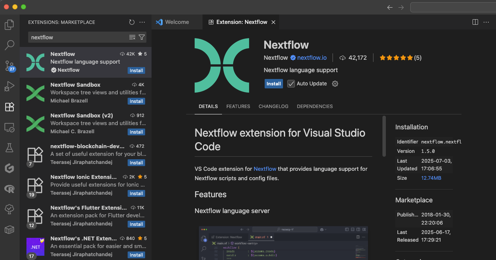
0.2. Layout przestrzeni roboczej¶
Ponieważ używałeś VS Code podczas całego kursu Hello Nextflow, jesteś już zaznajomiony z podstawami. Oto jak efektywnie zorganizować przestrzeń roboczą na tę sesję:
- Obszar edytora: Do przeglądania i edytowania plików. Możesz podzielić go na wiele paneli, aby porównywać pliki obok siebie.
- Eksplorator plików kliknij () (
Ctrl/Cmd+Shift+E): Lokalne pliki i foldery w Twoim systemie. Trzymaj to otwarte po lewej stronie, aby nawigować między plikami - Zintegrowany terminal (
Ctrl+Shift+backtick dla Windows i MacOS): Terminal do interakcji z komputerem u dołu. Użyj tego do uruchamiania Nextflow lub innych poleceń. - Panel problemów (
Ctrl+Shift+M): VS Code pokaże tutaj wszelkie wykryte błędy i problemy. Jest to przydatne do szybkiego podświetlenia problemów.
Możesz przeciągać panele lub je ukrywać (Ctrl/Cmd+B, aby przełączyć pasek boczny), aby dostosować Swój layout podczas pracy z przykładami.
Podsumowanie¶
Masz skonfigurowany VS Code z rozszerzeniem Nextflow i rozumiesz layout przestrzeni roboczej dla efektywnego programowania.
Co dalej?¶
Dowiedz się, jak podświetlanie składni pomaga zrozumieć strukturę kodu Nextflow na pierwszy rzut oka.
1. Podświetlanie składni i struktura kodu¶
Teraz, gdy Twoja przestrzeń robocza jest skonfigurowana, zbadajmy, jak podświetlanie składni VS Code pomaga Ci skuteczniej czytać i pisać kod Nextflow.
1.1. Elementy składni Nextflow¶
Otwórz basic_workflow.nf, aby zobaczyć podświetlanie składni w akcji:
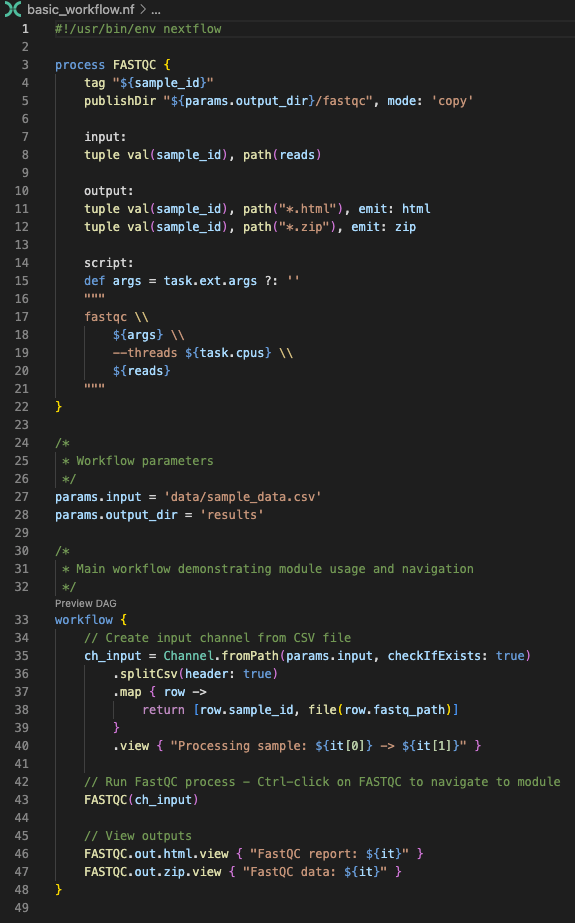
Zauważ, jak VS Code podświetla:
- Słowa kluczowe (
process,workflow,input,output,script) w wyróżniających się kolorach - Literały łańcuchowe i parametry z różnym stylem
- Komentarze w stonowanym kolorze
- Zmienne i wywołania funkcji z odpowiednim wyróżnieniem
- Bloki kodu z odpowiednimi prowadnicami wcięć
Kolory zależne od motywu
Konkretne kolory, które widzisz, będą zależeć od Twojego motywu VS Code (tryb ciemny/jasny), ustawień kolorów i wszelkich dokonanych dostosowań. Ważne jest, że różne elementy składni są wizualnie odróżnione od siebie, co ułatwia zrozumienie struktury kodu niezależnie od wybranego schematu kolorów.
1.2. Zrozumienie struktury kodu¶
Podświetlanie składni pomaga szybko zidentyfikować:
- Granice procesów: Wyraźne rozróżnienie między różnymi procesami
- Bloki wejścia/wyjścia: Łatwe do zauważenia definicje przepływu danych
- Bloki script: Faktycznie wykonywane polecenia
- Operacje na kanałach: Kroki transformacji danych
- Dyrektywy konfiguracji: Ustawienia specyficzne dla procesu
Ta wizualna organizacja staje się nieoceniona podczas pracy ze złożonymi workflow zawierającymi wiele procesów i skomplikowane przepływy danych.
Podsumowanie¶
Rozumiesz, jak podświetlanie składni VS Code pomaga czytać strukturę kodu Nextflow i identyfikować różne elementy języka dla szybszego programowania.
Co dalej?¶
Dowiedz się, jak inteligentne automatyczne uzupełnianie przyspiesza pisanie kodu dzięki kontekstowym sugestiom.
2. Inteligentne automatyczne uzupełnianie¶
Funkcje automatycznego uzupełniania VS Code pomagają pisać kod szybciej i z mniejszą liczbą błędów, sugerując odpowiednie opcje w zależności od kontekstu.
2.1. Sugestie kontekstowe¶
Opcje automatycznego uzupełniania różnią się w zależności od miejsca w kodzie:
Operacje na kanałach¶
Otwórz ponownie basic_workflow.nf i spróbuj wpisać channel. w bloku workflow:
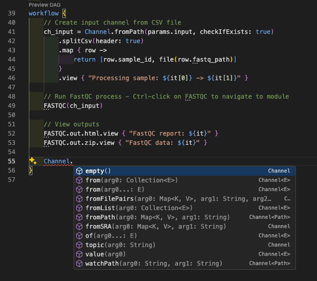
Zobaczysz sugestie dla:
fromPath()- Utworzenie kanału ze ścieżek plikówfromFilePairs()- Utworzenie kanału z par plikówof()- Utworzenie kanału z wartościfromSRA()- Utworzenie kanału z akcesji SRA- I wiele więcej...
To pomaga szybko znaleźć odpowiednią fabrykę kanałów do użycia bez konieczności zapamiętywania dokładnych nazw metod.
Możesz także odkryć operatory dostępne do zastosowania na kanałach. Na przykład wpisz FASTQC.out.html., aby zobaczyć dostępne operacje:
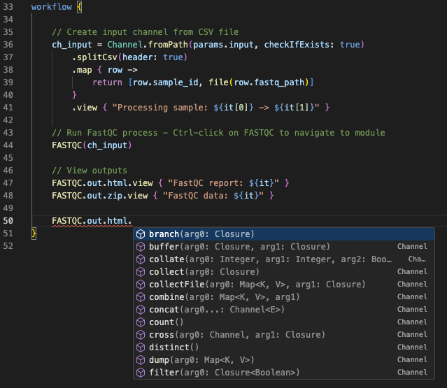
Dyrektywy procesu¶
Wewnątrz bloku script procesu wpisz task., aby zobaczyć dostępne właściwości wykonania:
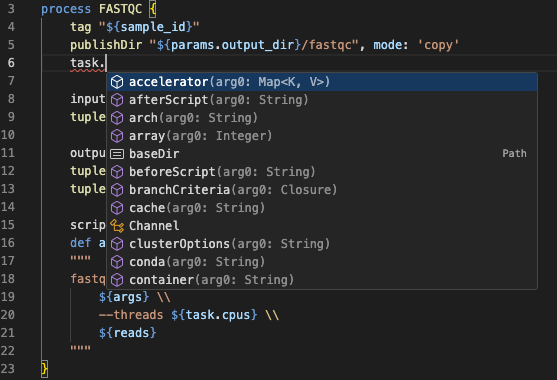
Konfiguracja¶
Otwórz nextflow.config i wpisz process. w dowolnym miejscu, aby zobaczyć dostępne dyrektywy procesu:
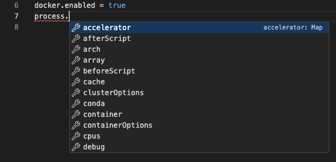
Zobaczysz sugestie dla:
executormemorycpus
To oszczędza czas podczas konfigurowania procesów i działa w różnych zakresach konfiguracji. Na przykład spróbuj wpisać docker., aby zobaczyć opcje konfiguracji specyficzne dla Docker.
Podsumowanie¶
Możesz używać inteligentnego automatycznego uzupełniania VS Code do odkrywania dostępnych operacji na kanałach, dyrektyw procesów i opcji konfiguracji bez zapamiętywania składni.
Co dalej?¶
Dowiedz się, jak wykrywanie błędów w czasie rzeczywistym pomaga wychwytywać problemy przed uruchomieniem workflow, po prostu przez czytanie kodu.
3. Wykrywanie błędów i diagnostyka¶
Wykrywanie błędów w czasie rzeczywistym w VS Code pomaga wychwytywać problemy przed uruchomieniem workflow.
3.1. Wykrywanie błędów składni¶
Stwórzmy celowy błąd, aby zobaczyć wykrywanie w akcji. Otwórz basic_workflow.nf i zmień nazwę procesu z FASTQC na FASTQ (lub jakąkolwiek inną nieprawidłową nazwę). VS Code natychmiast podświetli błąd w bloku workflow czerwoną falistą linią:
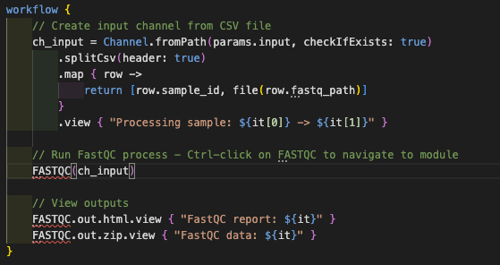
3.2. Panel problemów¶
Poza podświetlaniem poszczególnych błędów, VS Code zapewnia scentralizowany panel problemów, który agreguje wszystkie błędy, ostrzeżenia i komunikaty informacyjne w całej przestrzeni roboczej. Otwórz go za pomocą Ctrl/Cmd+Shift+M i użyj ikony filtra, aby pokazać tylko błędy istotne dla bieżącego pliku:
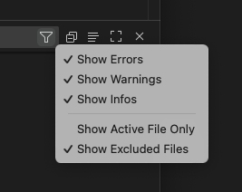
Kliknij dowolny problem, aby przejść bezpośrednio do problematycznej linii
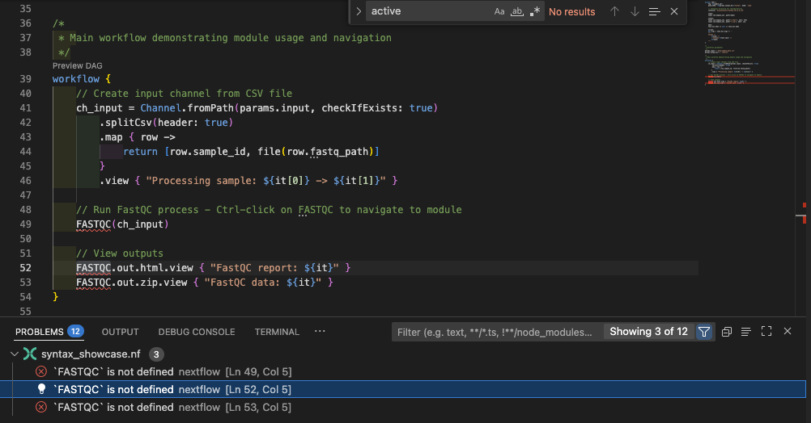
Napraw błąd, zmieniając nazwę procesu z powrotem na FASTQC.
3.3. Typowe wzorce błędów¶
Typowe błędy w składni Nextflow obejmują:
- Brakujące nawiasy: Niedopasowane
{lub} - Niekompletne bloki: Brakujące wymagane sekcje w procesach
- Nieprawidłowa składnia: Źle sformułowany Nextflow DSL
- Literówki w słowach kluczowych: Błędnie napisane dyrektywy procesu
- Niedopasowanie kanałów: Niekompatybilność typów
Serwer języka Nextflow podświetla te problemy w panelu problemów. Możesz sprawdzić je wcześnie, aby uniknąć błędów składni podczas uruchamiania pipeline.
Podsumowanie¶
Możesz używać wykrywania błędów VS Code i panelu problemów do wychwytywania błędów składni i problemów przed uruchomieniem workflow, oszczędzając czas i zapobiegając frustracji.
Co dalej?¶
Dowiedz się, jak efektywnie nawigować między procesami, modułami i definicjami w złożonych workflow.
4. Nawigacja po kodzie i zarządzanie symbolami¶
Efektywna nawigacja jest kluczowa podczas pracy ze złożonymi workflow obejmującymi wiele plików. Aby to zrozumieć, zastąp definicję procesu w basic_workflow.nf importem dostarczonego modułu:
| basic_workflow.nf | |
|---|---|
4.1. Przejdź do definicji¶
Jeśli najedziesz myszką na nazwę procesu, taką jak FASTQC, zobaczysz wyskakujące okienko z interfejsem modułu (wejścia i wyjścia):
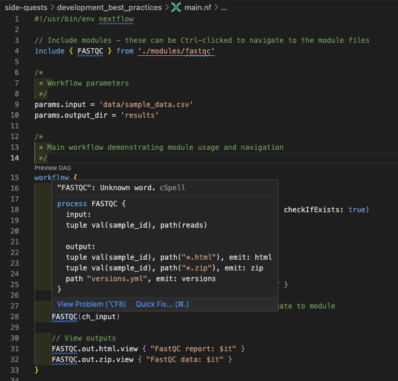
Ta funkcja jest szczególnie cenna podczas tworzenia workflow, ponieważ pozwala zrozumieć interfejs modułu bez bezpośredniego otwierania pliku modułu.
Możesz szybko przejść do dowolnej definicji procesu, modułu lub zmiennej, używając Ctrl/Cmd-klik. Najedź myszką na link do pliku modułu na górze skryptu i podążaj za linkiem zgodnie z sugestią:
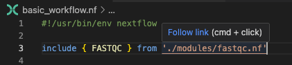
To samo działa dla nazw procesów. Wróć do basic_workflow.nf i spróbuj tego na nazwie procesu FASTQC w bloku workflow. To łączy Cię bezpośrednio z nazwą procesu (która w tym przykładzie jest taka sama jak plik modułu, ale może być w połowie znacznie większego pliku).
Aby wrócić do miejsca, w którym byłeś, użyj Alt+← (lub Ctrl+- na Mac). To potężny sposób eksplorowania kodu bez utraty miejsca.
Teraz zbadajmy nawigację w bardziej złożonym workflow, używając complex_workflow.nf (pliku przeznaczonego wyłącznie do ilustracji, o którym wspomnieliśmy wcześniej). Ten workflow zawiera wiele procesów zdefiniowanych w oddzielnych plikach modułów, a także kilka inline. Chociaż złożone struktury wieloplikowe mogą być trudne do ręcznej nawigacji, możliwość przeskakiwania do definicji znacznie ułatwia eksplorację.
- Otwórz
complex_workflow.nf - Nawiguj do definicji modułów
- Użyj Alt+← (lub Ctrl+-), aby wrócić do poprzedniej lokalizacji
- Nawiguj do nazwy procesu
FASTQCw bloku workflow. To łączy Cię bezpośrednio z nazwą procesu (która w tym przykładzie jest taka sama jak plik modułu, ale może być w połowie znacznie większego pliku). - Nawiguj ponownie wstecz
- Nawiguj do procesu
TRIM_GALOREw bloku workflow. Jest on zdefiniowany inline, więc nie przeniesie Cię do oddzielnego pliku, ale nadal pokaże Ci definicję procesu i nadal możesz wrócić do miejsca, w którym byłeś.
4.2. Nawigacja po symbolach¶
Mając nadal otwarty complex_workflow.nf, możesz uzyskać przegląd wszystkich symboli w pliku, wpisując @ w pasek wyszukiwania na górze VSCode (skrót klawiszowy to Ctrl/Cmd+Shift+O, ale może nie działać w Codespaces). Otwiera to panel nawigacji po symbolach, który wyświetla wszystkie symbole w bieżącym pliku:
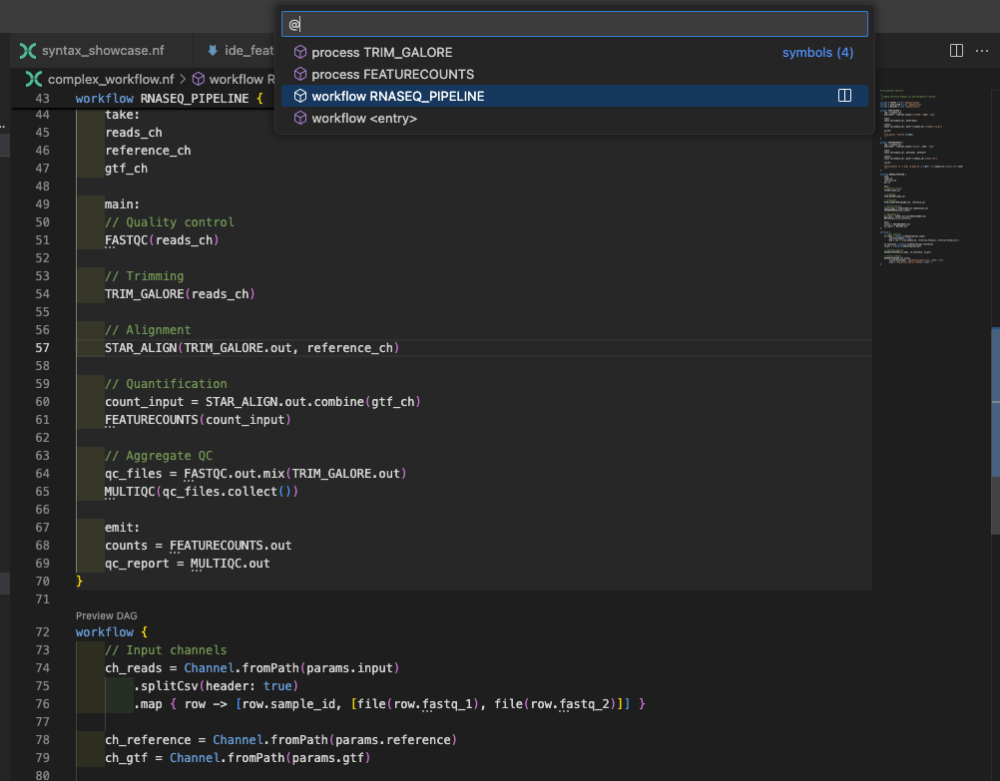
To pokazuje:
- Wszystkie definicje procesów
- Definicje workflow (w tym pliku zdefiniowano dwa workflow)
- Definicje funkcji
Zacznij pisać, aby filtrować wyniki.
4.3. Znajdź wszystkie odniesienia¶
Zrozumienie, gdzie proces lub zmienna jest używana w całej bazie kodu, może być bardzo pomocne. Na przykład, jeśli chcesz znaleźć wszystkie odniesienia do procesu FASTQC, zacznij od przejścia do jego definicji. Możesz to zrobić, otwierając modules/fastqc.nf bezpośrednio lub używając funkcji szybkiej nawigacji VS Code z Ctrl/Cmd-klik, jak zrobiliśmy powyżej. Po dotarciu do definicji procesu kliknij prawym przyciskiem myszy na nazwie procesu FASTQC i wybierz "Find All References" z menu kontekstowego, aby zobaczyć wszystkie wystąpienia, w których jest używany.
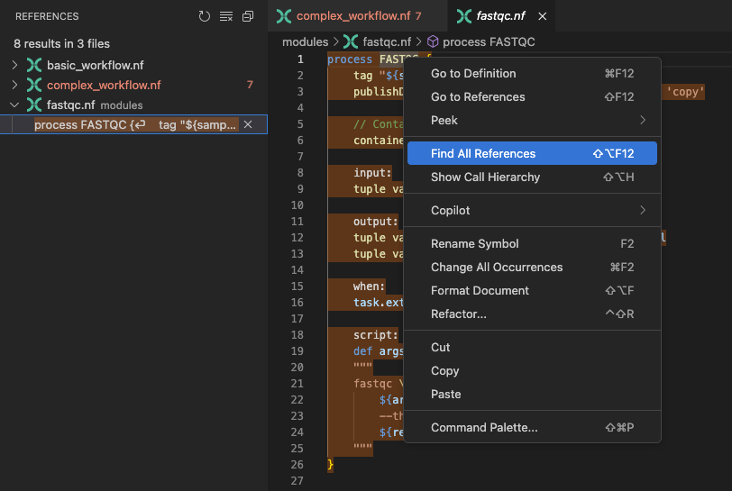
Ta funkcja wyświetla wszystkie wystąpienia, w których FASTQC jest przywoływany w Twojej przestrzeni roboczej, włączając jego użycie w dwóch różnych workflow. Ten wgląd jest kluczowy dla oceny potencjalnego wpływu modyfikacji procesu FASTQC.
4.4. Panel konspektu¶
Panel konspektu, znajdujący się na pasku bocznym eksploratora (kliknij ), zapewnia wygodny przegląd wszystkich symboli w bieżącym pliku. Ta funkcja pozwala szybko nawigować i zarządzać strukturą kodu, wyświetlając funkcje, zmienne i inne kluczowe elementy w widoku hierarchicznym.
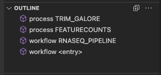
Użyj panelu konspektu do szybkiej nawigacji do różnych części kodu bez korzystania z przeglądarki plików.
4.5. Wizualizacja DAG¶
Rozszerzenie Nextflow VS Code może wizualizować Twoje workflow jako skierowany graf acykliczny (DAG). To pomaga zrozumieć przepływ danych i zależności między procesami. Otwórz complex_workflow.nf i kliknij przycisk "Preview DAG" nad workflow { (drugi blok workflow w tym pliku):
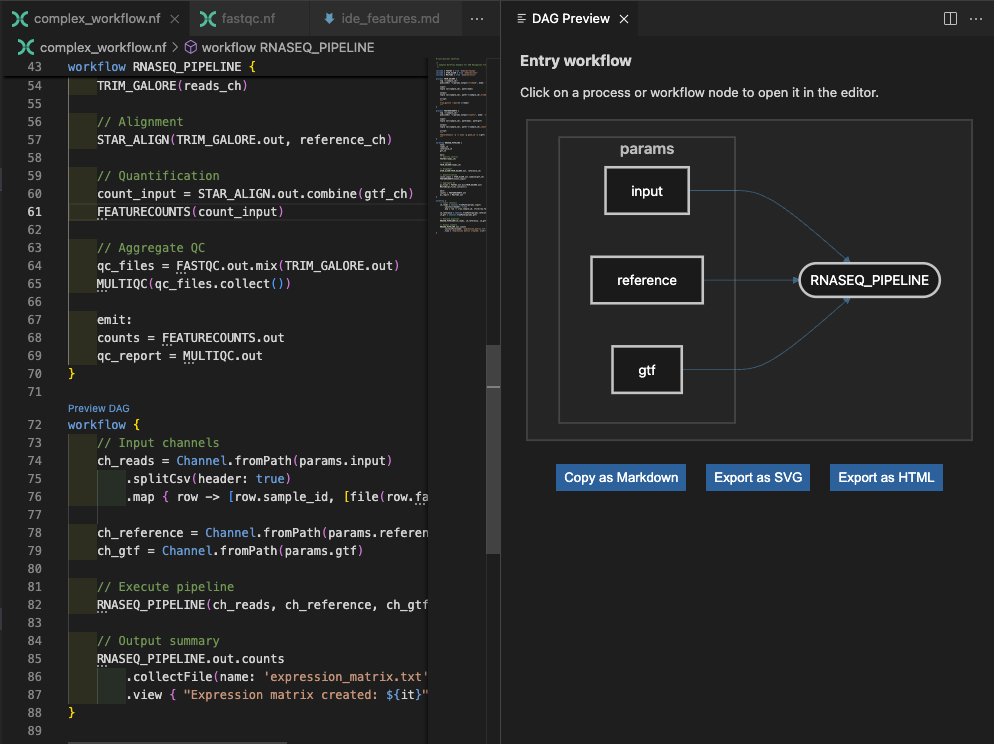
To jest tylko workflow 'wejściowe', ale możesz także podejrzeć DAG dla wewnętrznych workflow, klikając przycisk "Preview DAG" nad workflow RNASEQ_PIPELINE { wyżej:
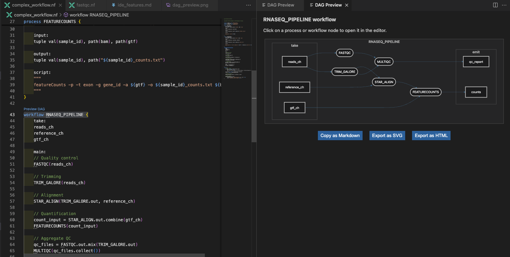
Dla tego workflow możesz używać węzłów w DAG do nawigacji do odpowiednich definicji procesów w kodzie. Kliknij węzeł, a przejdzie Cię do odpowiedniej definicji procesu w edytorze. Szczególnie gdy workflow urośnie do dużego rozmiaru, może to naprawdę pomóc w nawigacji po kodzie i zrozumieniu, jak procesy są połączone.
Podsumowanie¶
Możesz nawigować złożone workflow efektywnie, używając przejdź-do-definicji, wyszukiwania symboli, znajdź odniesienia i wizualizacji DAG do zrozumienia struktury kodu i zależności.
Co dalej?¶
Dowiedz się, jak efektywnie pracować z wieloma połączonymi plikami w większych projektach Nextflow.
5. Praca z wieloma plikami¶
Rzeczywiste programowanie Nextflow obejmuje pracę z wieloma połączonymi plikami. Zbadajmy, jak VS Code pomaga efektywnie zarządzać złożonymi projektami.
5.1. Szybka nawigacja po plikach¶
Mając otwarty complex_workflow.nf, zauważysz, że importuje kilka modułów. Przećwiczmy szybką nawigację między nimi.
Naciśnij Ctrl+P (lub Cmd+P) i zacznij wpisywać "fast":
VS Code pokaże Ci pasujące pliki. Wybierz modules/fastqc.nf, aby tam natychmiast przeskoczyć. To jest znacznie szybsze niż klikanie przez eksplorator plików, gdy mniej więcej wiesz, jakiego pliku szukasz.
Spróbuj tego z innymi wzorcami:
- Wpisz "star", aby znaleźć plik modułu dopasowania STAR (
star.nf) - Wpisz "utils", aby znaleźć plik funkcji użytkowych (
utils.nf) - Wpisz "config", aby przeskoczyć do plików konfiguracyjnych (
nextflow.config)
5.2. Podzielony edytor do programowania wieloplikowego¶
Podczas pracy z modułami często musisz widzieć jednocześnie główne workflow i definicje modułów. Skonfigurujmy to:
- Otwórz
complex_workflow.nf - Otwórz
modules/fastqc.nfw nowej zakładce - Kliknij prawym przyciskiem myszy na zakładce
modules/fastqc.nfi wybierz "Split Right" - Teraz możesz widzieć oba pliki obok siebie
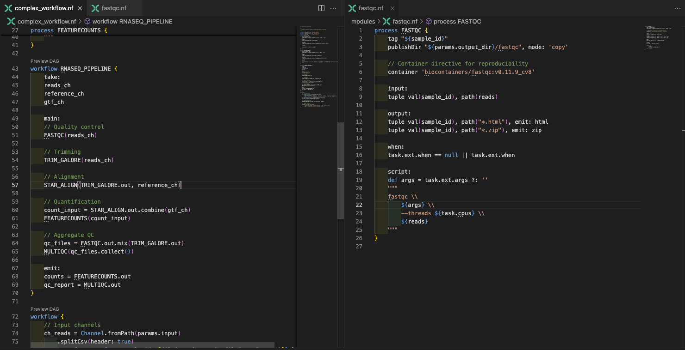
To jest nieocenione podczas:
- Sprawdzania interfejsów modułów podczas pisania wywołań workflow, gdy podgląd nie wystarczy
- Porównywania podobnych procesów w różnych modułach
- Debugowania przepływu danych między workflow a modułami
5.3. Wyszukiwanie w całym projekcie¶
Czasami musisz znaleźć, gdzie określone wzorce są używane w całym projekcie. Naciśnij Ctrl/Cmd+Shift+F, aby otworzyć panel wyszukiwania.
Spróbuj wyszukać publishDir w całej przestrzeni roboczej:
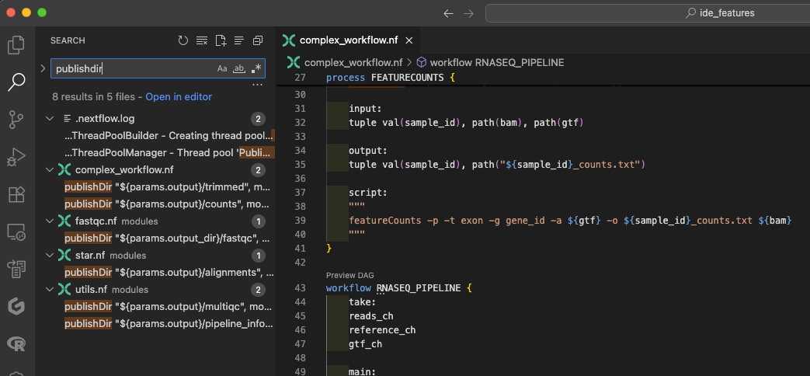
To pokazuje każdy plik, który używa katalogów publikacji, pomagając Ci:
- Zrozumieć wzorce organizacji wyjść
- Znaleźć przykłady określonych dyrektyw
- Zapewnić spójność w modułach
Podsumowanie¶
Możesz zarządzać złożonymi projektami wieloplikowymi, używając szybkiej nawigacji po plikach, podzielonych edytorów i wyszukiwania w całym projekcie do efektywnej pracy z workflow i modułami.
Co dalej?¶
Dowiedz się, jak funkcje formatowania kodu i utrzymania utrzymują Twoje workflow zorganizowane i czytelne.
6. Formatowanie i utrzymanie kodu¶
Odpowiednie formatowanie kodu jest niezbędne nie tylko dla estetyki, ale także dla zwiększenia czytelności, zrozumienia i łatwości aktualizacji złożonych workflow.
6.1. Automatyczne formatowanie w akcji¶
Otwórz basic_workflow.nf i celowo zepsuj formatowanie:
- Usuń część wcięć: Podświetl cały dokument i naciśnij
shift+tabwiele razy, aby usunąć jak najwięcej wcięć. - Dodaj dodatkowe spacje w losowych miejscach: w instrukcji
channel.fromPath, dodaj 30 spacji po(. - Złam kilka linii niezręcznie: Dodaj nową linię między operatorem
.view {a łańcuchemProcessing sample:, ale nie dodawaj odpowiedniego nowego wiersza przed zamykającym nawiasem}.
Teraz naciśnij Shift+Alt+F (lub Shift+Option+F na MacOS), aby automatycznie sformatować:
VS Code natychmiast:
- Naprawia wcięcia, aby wyraźnie pokazać strukturę procesu
- Wyrównuje podobne elementy spójnie
- Usuwa niepotrzebne białe znaki
- Utrzymuje czytelne przerwy w liniach
Zauważ, że automatyczne formatowanie może nie rozwiązać każdego problemu ze stylem kodu. Serwer języka Nextflow ma na celu utrzymanie porządku w kodzie, ale także szanuje Twoje osobiste preferencje w niektórych obszarach. Na przykład, jeśli usuniesz wcięcie wewnątrz bloku script procesu, formater pozostawi to bez zmian, ponieważ możesz celowo preferować ten styl.
Obecnie nie ma ścisłego wymuszania stylu dla Nextflow, więc serwer języka oferuje pewną elastyczność. Jednak będzie spójnie stosować reguły formatowania wokół definicji metod i funkcji w celu utrzymania przejrzystości.
6.2. Funkcje organizacji kodu¶
Szybkie komentowanie¶
Zaznacz blok kodu w Swoim workflow i naciśnij Ctrl+/ (lub Cmd+/), aby go zakomentować:
// workflow {
// ch_input = channel.fromPath(params.input)
// .splitCsv(header: true)
// .map { row -> [row.sample_id, file(row.fastq_path)] }
//
// FASTQC(ch_input)
// }
To idealne do:
- Tymczasowego wyłączania części workflow podczas programowania
- Dodawania wyjaśniających komentarzy do złożonych operacji na kanałach
- Dokumentowania sekcji workflow
Użyj Ctrl+/ (lub Cmd+/) ponownie, aby odkomentować kod.
Składanie kodu do przeglądu¶
W complex_workflow.nf zauważ małe strzałki obok definicji procesów. Kliknij je, aby złożyć (zwinąć) procesy:
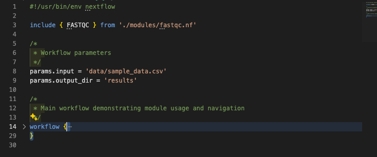
To daje Ci przegląd wysokiego poziomu struktury workflow bez gubienia się w szczegółach implementacji.
Dopasowanie nawiasów¶
Umieść kursor obok dowolnego nawiasu { lub }, a VS Code podświetli pasujący nawias. Użyj Ctrl+Shift+\ (lub Cmd+Shift+\), aby przeskoczyć między pasującymi nawiasami.
To jest kluczowe dla:
- Zrozumienia granic procesów
- Znajdowania brakujących lub dodatkowych nawiasów
- Nawigacji zagnieżdżonych struktur workflow
Wieloliniowe zaznaczanie i edycja¶
Dla edycji wielu linii jednocześnie VS Code oferuje potężne możliwości wielokursorowe:
- Wieloliniowe zaznaczanie: Przytrzymaj Ctrl+Alt (lub Cmd+Option dla MacOS) i użyj klawiszy strzałek do zaznaczenia wielu linii
- Wieloliniowe wcięcia: Zaznacz wiele linii i użyj Tab do wcięcia lub Shift+Tab do wycofania wcięcia całych bloków
Jest to szczególnie przydatne do:
- Spójnego wcięcia całych bloków procesów
- Dodawania komentarzy do wielu linii jednocześnie
- Edycji podobnych definicji parametrów w wielu procesach
Podsumowanie¶
Możesz utrzymywać czysty, czytelny kod, używając automatycznego formatowania, funkcji komentowania, składania kodu, dopasowania nawiasów i wieloliniowej edycji do efektywnej organizacji złożonych workflow.
Co dalej?¶
Dowiedz się, jak VS Code integruje się z Twoim szerszym procesem programistycznym poza samą edycją kodu.
7. Integracja workflow programistycznego¶
VS Code dobrze integruje się z workflow programistycznym poza samą edycją kodu.
7.1. Integracja kontroli wersji¶
Codespaces i integracja z Git
Jeśli pracujesz w GitHub Codespaces, niektóre funkcje integracji Git mogą nie działać zgodnie z oczekiwaniami, szczególnie skróty klawiszowe dla Source Control. Mogłeś także odmówić otwarcia katalogu jako repozytorium Git podczas początkowej konfiguracji, co jest w porządku do celów szkoleniowych.
Jeśli Twój projekt jest repozytorium git (tak jak ten jest), VS Code pokazuje:
- Zmodyfikowane pliki z kolorowymi wskaźnikami
- Status Git na pasku stanu
- Widoki diff inline
- Możliwości commit i push
Otwórz panel Source Control, używając przycisku kontroli źródła () (Ctrl+Shift+G lub Cmd+Shift+G, jeśli pracujesz z VSCode lokalnie), aby zobaczyć zmiany git i dokonywać commit bezpośrednio w edytorze.
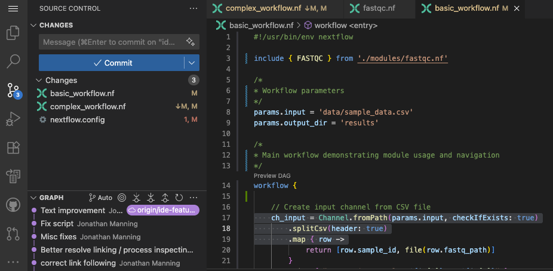
7.2. Uruchamianie i inspekcja workflow¶
Uruchommy workflow, a następnie sprawdźmy wyniki. W zintegrowanym terminalu (Ctrl+Shift+ backtick w Windows i MacOS), uruchom podstawowy workflow:
nextflow run basic_workflow.nf --input data/sample_data.csv --output_dir results
Podczas działania workflow zobaczysz wyjście w czasie rzeczywistym w terminalu. Po zakończeniu możesz użyć VS Code do inspekcji wyników bez opuszczania edytora:
- Nawiguj do katalogów work: Użyj eksploratora plików lub terminala do przeglądania
.nextflow/work - Otwórz pliki logów: Kliknij ścieżki plików logów w wyjściu terminala, aby otworzyć je bezpośrednio w VS Code
- Sprawdź wyjścia: Przeglądaj opublikowane katalogi wyników w eksploratorze plików
- Wyświetl raporty wykonania: Otwórz raporty HTML bezpośrednio w VS Code lub przeglądarce
To utrzymuje wszystko w jednym miejscu zamiast przełączać się między wieloma aplikacjami.
Podsumowanie¶
Możesz zintegrować VS Code z kontrolą wersji i wykonywaniem workflow, aby zarządzać całym procesem programistycznym z jednego interfejsu.
Co dalej?¶
Zobacz, jak wszystkie te funkcje IDE współpracują w codziennym workflow programistycznym.
8. Podsumowanie i szybkie notatki¶
Oto kilka szybkich notatek na temat każdej z funkcji IDE omówionych powyżej:
8.1. Rozpoczynanie nowej funkcjonalności¶
- Szybkie otwieranie pliku (
Ctrl+PlubCmd+P) do znalezienia odpowiednich istniejących modułów - Podzielony edytor do przeglądania podobnych procesów obok siebie
- Nawigacja po symbolach (
Ctrl+Shift+OlubCmd+Shift+O) do zrozumienia struktury pliku - Automatyczne uzupełnianie do szybkiego pisania nowego kodu
8.2. Debugowanie problemów¶
- Panel problemów (
Ctrl+Shift+MlubCmd+Shift+M) do zobaczenia wszystkich błędów jednocześnie - Przejdź do definicji (
Ctrl-kliklubCmd-klik) do zrozumienia interfejsów procesów - Znajdź wszystkie odniesienia do zobaczenia, jak procesy są używane
- Wyszukiwanie w całym projekcie do znalezienia podobnych wzorców lub problemów
8.3. Refaktoryzacja i ulepszanie¶
- Wyszukiwanie w całym projekcie (
Ctrl+Shift+FlubCmd+Shift+F) do znalezienia wzorców - Automatyczne formatowanie (
Shift+Alt+FlubShift+Option+F) do utrzymania spójności - Składanie kodu do skupienia się na strukturze
- Integracja z Git do śledzenia zmian
Podsumowanie¶
Właśnie odbyłeś ekspresową wycieczkę po funkcjach IDE VS Code dla programowania Nextflow. Te narzędzia uczynią Cię znacznie bardziej produktywnym poprzez:
- Zmniejszenie błędów poprzez sprawdzanie składni w czasie rzeczywistym
- Przyspieszenie programowania dzięki inteligentnemu automatycznemu uzupełnianiu
- Ulepszenie nawigacji w złożonych wieloplikowych workflow
- Utrzymanie jakości poprzez spójne formatowanie
- Zwiększenie zrozumienia poprzez zaawansowane podświetlanie i wizualizację struktury
Nie oczekujemy, że zapamiętasz wszystko, ale teraz wiesz, że te funkcje istnieją i będziesz w stanie je znaleźć, gdy będziesz ich potrzebować. Kontynuując programowanie workflow Nextflow, te funkcje IDE staną się drugą naturą, pozwalając Ci skupić się na pisaniu wysokiej jakości kodu zamiast zmagać się ze składnią i strukturą.
Co dalej?¶
Zastosuj te umiejętności IDE podczas pracy z innymi modułami szkoleniowymi, na przykład:
- nf-test: Twórz kompleksowe zestawy testów dla Swoich workflow
- Hello nf-core: Buduj pipeline gotowe do produkcji ze standardami społeczności
Prawdziwa siła tych funkcji IDE ujawnia się, gdy pracujesz nad większymi, bardziej złożonymi projektami. Zacznij stopniowo włączać je do Swojego workflow - w ciągu kilku sesji staną się drugą naturą i zmienią sposób, w jaki podchodzisz do programowania Nextflow.
Od wychwytywania błędów, zanim Cię spowolnią, po łatwą nawigację po złożonych bazach kodu, te narzędzia uczynią Cię bardziej pewnym i efektywnym programistą.
Udanego kodowania!